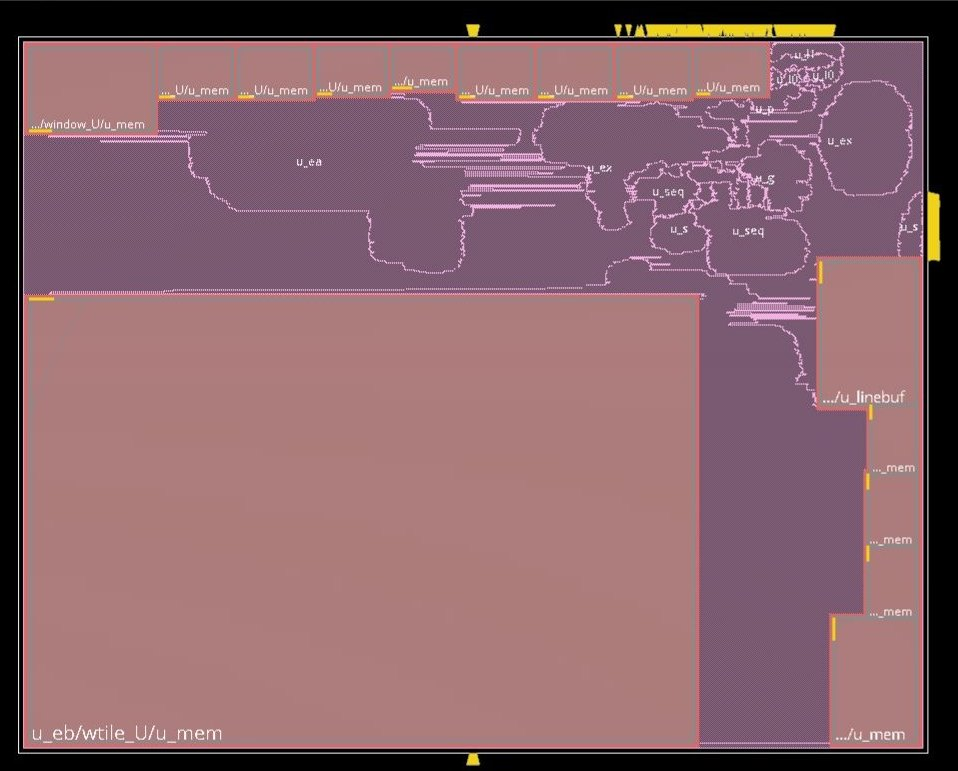
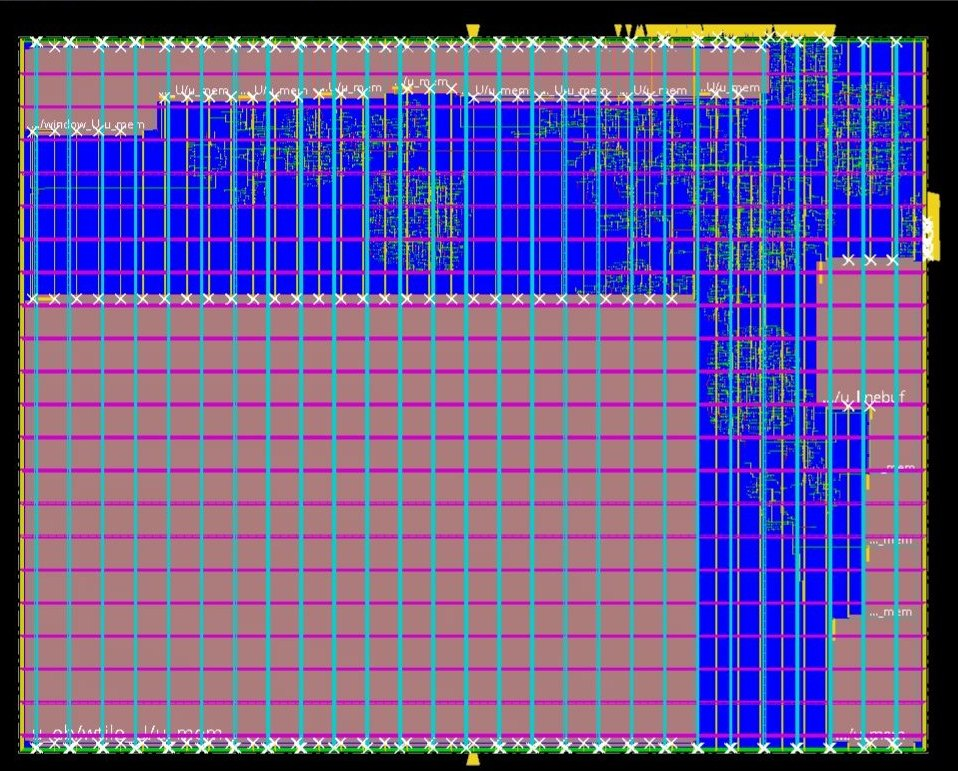
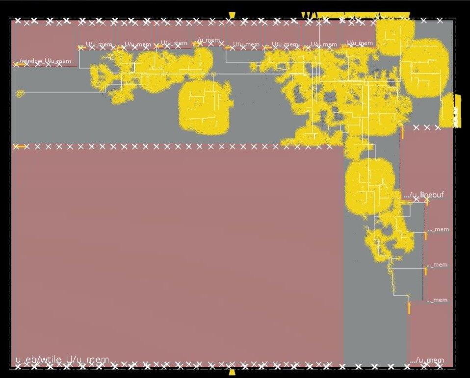
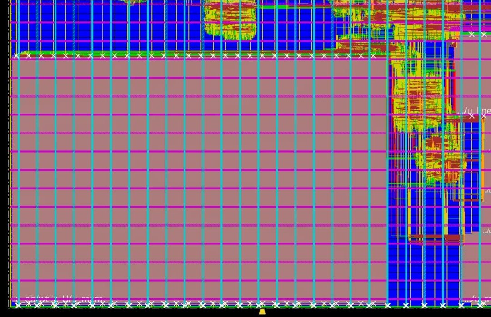
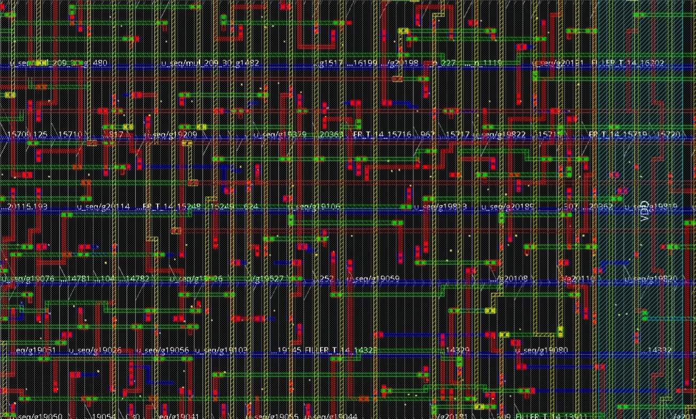
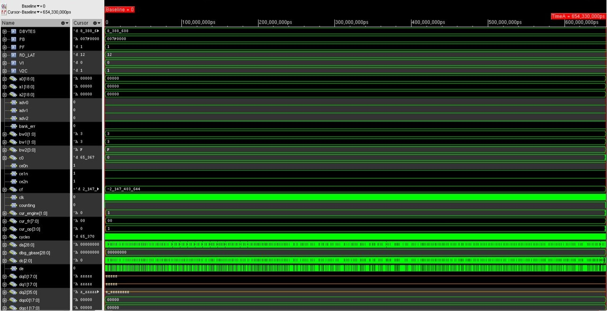

AI accelerator ASIC (accel_core)
A neural-network inference core taken from verified FPGA RTL to a routed, timing-signed-off 45 nm layout.
Screenshot proofs
The layout pictures come from the routed database one run before the final one (the final run only re-spread the block pins along the edges to remove edge shorts and gained 0.03 ns of setup slack).







Overview
accel_core is the inference core of the SQA-Arc accelerator: it runs whole quantised neural networks (ternary and 4-bit weights) operator by operator from a descriptor program in external memory. The same RTL had already been verified on an AMD Artix-7 FPGA (XC7A200T) at 100 MHz.
This project took that RTL to an ASIC layout in the GPDK045 generic 45 nm technology: memory planning, synthesis, place and route of the core (no pad ring: core-only block), sign-off timing with signal integrity, and power analysis with real simulation activity. Every verification step matched the expected results bit for bit and cycle for cycle.
It became the reference design for the three SQA chip versions (V1, V2, V3), which all reuse an updated copy of this core.
The 15 large on-chip buffers are placeholder SRAM macros; see Memory design.
Headline numbers
Architecture
| Block | What it does |
|---|---|
| Engine A | ternary-weight convolution engine (Vitis HLS) |
| Engine B | int4-weight convolution / dense engine (Vitis HLS) |
| AUX engine | requantisation, pooling, element-wise add, activation, argmax, copy (Vitis HLS) |
| seq_ctrl + desc_decode + slot_table | hand-written sequencer that fetches and decodes the operator program, one operator at a time |
| DMA blocks | dma_gather, dma_scatter, dma_linear_rd x2, param_router: move activations and parameters |
| mem_arb | arbiter onto one DDR-style external memory port |
| On-chip buffers | 15 large arrays as SRAM macros (weight tile, windows, line buffer, requant tables, tap index), 7 small ones as flip-flops |
Key specifications
| Parameter | Value |
|---|---|
| Technology | GPDK045 (Cadence generic 45 nm PDK), gsclib045 standard cells |
| Block size | 1650 × 1300 µm (2.145 mm²), core-only layout (no pad ring) |
| Signal pins | 1,023 (block pins, no pads) |
| Clock | 100 MHz (10 ns) |
| Supply / corners | 1.0 V nominal core library; signed off at 0.9 V / 125 C (slow, setup) and 1.1 V / 0 C (fast, hold) |
| Cells after synthesis | 72,806 (16,081 flip-flops) |
| Synthesis area | 1,407,518 µm², of which SRAM macros 1,203,010 µm² (85.5 %) |
| Instances after P&R | 204,007 incl. fillers; standard cells 222,162 µm²; standard-cell density 27 % |
| Memories | 15 SRAM macros (placeholder models, 1-port and 2-port) + 7 arrays of up to 2 Kbit as flip-flops (8.3 Kbit); largest = 4 × 294,912 weight tile |
| Networks | 10 networks (resnet8, mcunet, shiftnet, ghostnet, squeezenet, deepshift, efficientnet, resnet18, bnn_xnor, shufflenetv2) |
| FPGA reference (same RTL) | Artix-7 XC7A200T at 100 MHz: core alone about 11,690 LUT; whole FPGA design 20,845 LUT, 15,743 FF, 75 BRAM tiles, 22 DSP |
Design flow
All steps use Cadence tools on a university server; HLS and firmware builds ran on a PC.
- RTL design: Verilog RTL; the neural-network engines were generated with Vitis HLS from C++ and checked bit-exact against a Python golden model.
- RTL simulation: Xcelium (and Vivado xsim on the PC) with my own board models: SDRAM, sync SRAM, QSPI flash, UART, SD card, I2C, display capture.
- Synthesis: Cadence Genus to the gsclib045 standard cells, 100 MHz core clock, slow corner.
- Place and route: Cadence Innovus: pad ring, floorplan, power grid, placement, clock-tree synthesis, routing, post-route optimisation.
- Physical verification: Cadence Pegasus DRC with the full GPDK045 rule deck, and Pegasus LVS (layout against netlist).
- Static timing: Cadence Tempus, SI-aware, with extracted parasitics: setup in the slow corner, hold in the fast and slow corners, plus every design-rule check type (slew, capacitance).
- Power and rail analysis: Cadence Voltus: power with real gate-level activity, static IR drop, electromigration (EM) and dynamic IR drop.
- Gate-level sign-off simulation: The routed netlist simulated again in Xcelium, with and without the routed delays (SDF back-annotation, all timing checks on).
Results
| Check | Result |
|---|---|
| Synthesis timing (Genus) | setup slack +0.894 ns at 10 ns |
| Sign-off timing (Tempus, SI-aware) | setup WNS +0.020 ns, TNS 0; hold +0.001 ns (fast) / +0.155 ns (slow); 0 violators |
| Physical checks (Innovus) | DRC 0, process antenna 0, 0 open nets |
| Power (Voltus, slow corner) | 4.28 mW with real activity (synbk3 test, 100 % of nets annotated); 8.88 mW vectorless; clock tree 1.34 mW |
| Power by block (real activity) | Engine A 1.05 / Engine B 1.04 / AUX 0.84 / rest 1.36 mW |
| RTL and ASIC-RTL simulation | 32 / 32 tests exact (errors 0 and exact cycle counts), incl. a full mcunet network of 50.9 M cycles |
| Gate-level simulation | post-synthesis 19 / 19, post-route 19 / 19, post-route with SDF delays 3 / 3 with 0 timing-check violations |
| Not done on this block | Pegasus DRC / LVS (the placeholder macros have no layout); these were done later on the SQA chips |
Problems solved
Memories without a memory compiler. The generic PDK has no SRAM compiler, and 1.48 Mbit of flip-flops would have meant millions of cells. I wrote a generator for placeholder SRAM macros (behaviour model, estimated timing / power library, outline and pins) and kept only arrays of up to 2 Kbit as flip-flops.
HLS initial values do not exist on an ASIC. 135 registers in the HLS engines relied on FPGA power-up values. Gate-level simulation hung from X-pessimism. I proved that no non-reset register affects the result by passing every test from both all-0 and all-1 start states; all state machines and valid flags are reset.
Signal integrity decides the margin. Timing without SI was pessimistic (-0.326 ns); SI-aware Tempus is the sign-off number (+0.020 ns). The critical paths are 48-bit address subtractions generated by HLS in all three engines: the place to pipeline for a faster clock.